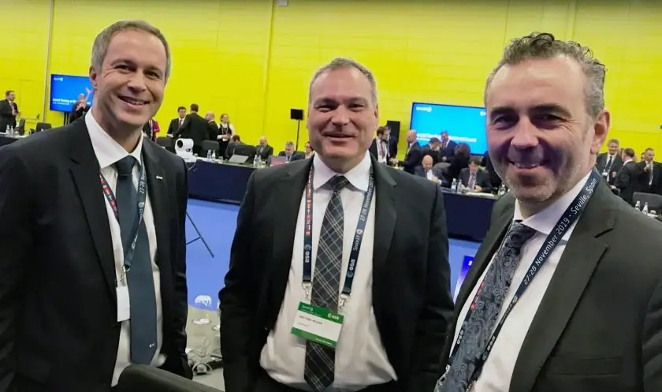
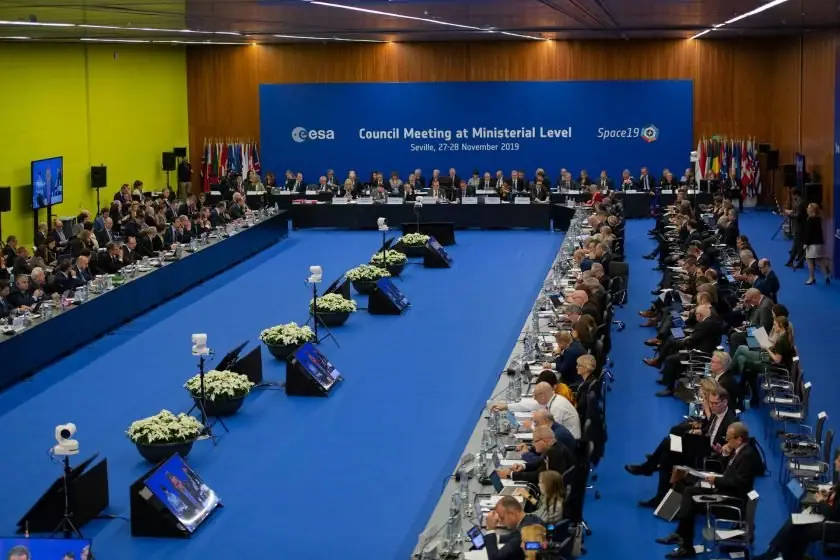

Science news ·
Germany invests 3.3 billion euro in European space exploration and becomes ESA’s largest contributor
The German delegation at the European Space Agency (ESA) Council Meeting at Ministerial Level, ‘Space19+’, was headed by the Federal Government Coordinator of German Aerospace Policy, Thomas Jarzombek, who is a member of the Federal Parliament. He was accompanied and supported by representatives from the Federal Ministry for Economic Affairs and Energy (Bundesministerium für Wirtschaft und Energie; BMWi) and the Federal Ministry of Transport and Digital Infrastructure (Bundesministerium für Verkehr und digitale Infrastruktur; BMVI). Walther Pelzer, German Aerospace Center (Deutsches Zentrum für Luft- und Raumfahrt; DLR) Executive Board member responsible for the Space Administration, also participated in the negotiations. Together with his team from the Space Administration in Bonn, Pelzer prepared working-level German position papers for the meeting in consultation with Federal Government officials.

At the end of the conference, Thomas Jarzombek stated that: “After two days of intensive negotiations, Germany has committed a total of 3.3 billion euro for European space programmes over the next three to five years. In setting out our priorities, we have shown that we are a reliable partner for ESA. To achieve our goal of strengthening small and medium-sized German space companies, we have doubled our funding for the relevant programmes. To address the challenges of climate change, Germany has increased its investment in Earth observation to 720 million euro. We have also succeeded in enabling the European lunar mission with a high level of commitment – 55 million euro.”
At ‘Space 19+’, a total of 14.4 billion euro were committed. At 22.9 percent, Germany is now ESA’s largest contributor, ahead of France. Specifically, Germany has committed approximately one billion euro to the ESA mandatory programmes. In addition to the general budget, these include the science programme and the European Spaceport in French Guiana. Approximately 2.3 billion euro of the German contribution will go towards what are referred to as the optional programmes: ~720 million euro for Earth observation, ~330 million euro for telecommunications, ~160 million euro for technology programmes, 84 million euro for space situational awareness and security, ~490 million euro for space transport and operations, and ~550 million euro for human spaceflight, microgravity research and exploration.

The German financial commitments in detail
Launch systems
From the end of 2020, Ariane 6 will be the new European launcher for carrying payloads into space, and Germany will contribute ~23 percent of the total development costs. The industrial prime contractors are ArianeGroup, with sites in Germany at Bremen and Ottobrunn, and MT Aerospace in Augsburg and Bremen. Germany is contributing a total of ~90 million euro to the further development of Ariane 6, including the preparation of the future upper stage. Germany is investing ~230 million euro in the optional Launchers Exploitation and Accompaniment (LEAP) programme and will be investing ~95 million euro for the operation and modernisation of the European Spaceport in French Guiana up until the end of 2024.
Germany is participating in the Future Launchers Preparatory Programme (FLPP) with ~137 million euro. The focus will be on the development of a cost-effective lightweight upper stage (for example, constructed using carbon-fibre reinforced composite materials), improving the performance of existing and new engines (Vulcain NEO, Vinci Evolution) and the implementation of new processes and methods (for example, additive manufacturing). Under the name ‘Commercial Space Transportation Services and Support’ (CSTS), ESA is taking forward a new optional programme in the context of NewSpace. Germany is contributing ~28 million euro to the ‘Commercial Space Transportation Services’ element, which broadly supports industry in the development of new space transport services, particularly in the field of microlauncher technology.
Science
The Science Programme makes a significant contribution to the development and maintenance of Europe’s space infrastructure. It finances research satellites and their launch and operation. The scientific instruments are developed by the Member States themselves. By 2035, 11 new missions will have been launched to explore and analyse the Solar System and the Universe at large. With a budget contribution of 20.7 percent of the total, Germany is the largest contributor to this programme, committing ~578 million euro over five years. Large and medium-sized missions with significant German participation are: Solar Orbiter (solar research, scheduled launch: 5 February 2020), JUICE (Jupiter mission, scheduled launch: 2022), EUCLID (dark energy/dark matter, planned launch: 2022), PLATO (exoplanet mission: 2026), ATHENA (X-ray telescope mission: 2031) and LISA (gravitational wave observatory: 2034).
Earth observation for climate protection and collaborative development
Germany is a world leader in Earth observation – both in scientific and technological terms, and in the use and processing of data for the analysis of the Earth system. With ~520 million euro (30 percent of the budget), Germany will retain its leading role in the currently operational Copernicus European Earth observation programme. This will involve the further development and expansion of the system to include new satellites (Sentinels 7-12) and services for climate monitoring and climate protection, agriculture, mobility, security and disaster prevention. German expertise could also be incorporated into the planned Copernicus hyperspectral mission. In addition, Germany is contributing ~170 million euro (~26 percent) to the ‘FutureEO’ scientific programme. Ten million (out of 50 million euro) has been allocated to the new ‘Global Development Assistance’ (GDA) programme. ‘InCubed+’ is aimed at short-duration commercial Earth observation activities with private sector backing –Germany is contributing 15 million euro. In addition, Germany is supporting a small Arctic satellite mission (Demonstrator, NewSpace approach) to improve short- and medium-term weather forecasts in the Arctic region with 7.5 million euro.
Telecommunications
In telecommunications (ARTES programmes), the aim is to support innovative technologies and products for the global commercial market. The main focus is on the Core Competitiveness (CC) programme, optical communications (ScyLight), commercial applications (Business Applications and Space Solutions; BASS), Secure Satcom for Safety and Security (4S) and the Partnership Programme. With a financial contribution of 80 million euro for ScyLight and 60 million euro for 4S, Germany has secured a leading role. In the CC Programme, Germany increased its contribution to 67 million euro and doubled its BASS contribution to 37 million euro. Germany contributed 65 million euro to the Partnership Programme, including Electra with an in-orbit demonstration, and 13 million euro to the framework programme for the support of satellites needed for the 5G mobile communications networks. “Germany is very well positioned in the satellite telecommunications sector. Our aim is to increase the competitiveness of components and support system capabilities with a focus on secure communications – the keyword here is quantum encryption – to integrate satellite technology and applications into the new 5G mobile networks and above all to continue technological and political leadership in optical laser communication,” says Walther Pelzer. One example is the planned optical communication network Hydron, which is designed to provide fast connections for users with high data transfer requirements, supplementing and complementing the terrestrial fibre optic network.
Space security
Space weather, observations of near-Earth objects and space debris are as relevant to science as they are to society. Germany is therefore contributing some 12 million euro to the core element of this programme. In addition, Germany will provide 60 million euro for the Hera mission and assume responsibility for system management. Together with NASA’s Double Asteroid Redirection Test (DART) mission, Hera will investigate how asteroids can be diverted from their trajectory where there is a risk of collision with Earth. HERA’s target is the double asteroid Didymos / Didymoon. The craft will perform observations and analyses in connection with the impact of the NASA DART spacecraft on the smaller asteroid, Didymoon, planned for September 2022. The findings will be used for fundamental research as well as for the preparation of possible defence missions against asteroids. Germany is also contributing ~12 million euro to a mission for the active removal of space debris (ADRIOS).
Technology development
German participation in the General Support Technology Programme (GSTP) aims to maintain, expand and strengthen the industrial competitiveness of small and medium-sized enterprises (SMEs), particularly start-ups. New priorities include the digitalisation of production cycles, technologies for the sustainable use of space, Industry 4.0 compatible production methods, robotics and modern sensor technologies, AI-supported applications on satellites, and the development and use of quantum technologies. Germany has increased its contribution by a factor of 2.5 to 160 million euro. The programme aims to close existing gaps in technological development and focuses on the maturation of core technologies and components for future missions.
E3P – the European Exploration Envelope Programme
All robotic and astronautic exploration activities will be brought together under the ‘European Exploration Envelope Programme’ (E3P). This combines the European science and technology programme for the use of near-Earth orbits for space research with the exploration of the Moon and Mars. Sub-programmes will be the operation of the ISS and its utilisation (German share: 416 million euro). As the principal constructor and funder of the European Service Modules (ESM 1-4), the supply component of the US Orion spacecraft, Germany is an indispensable part of NASA’s Artemis lunar programme. This is supported by a strong role for SMEs, which Germany is aiming for through its subscription of 25 million euro for European gateway activities. In addition, Germany will play a leading role in the sustainable robotic exploration of the Moon with a contribution of 55 million euro. Germany is also contributing 20 million euro to the Exploration Preparation, Research and Technology (ExPeRT) programme, which will conduct mission studies and technology development for other exploration topics, including a commercial approach. For the consolidation of ExoMars (launch: July 2020) and selected technology elements of the ‘Mars Sample Return’ mission being planned in cooperation with NASA, Germany is providing ~37 million euro.